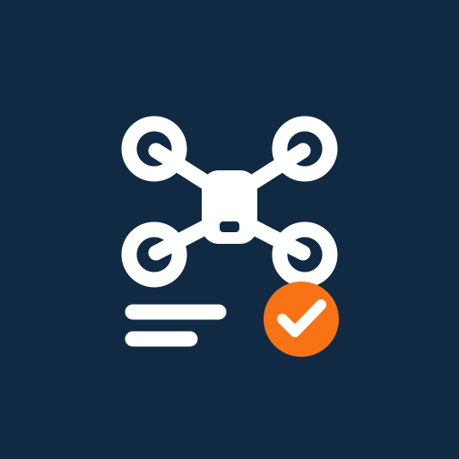

ドローン運航記録
Autel EVO Lite / Lite+ 向け
ホーム画面への追加は、このページで行ってください。
アプリを開くホーム画面に追加する
- iPhoneのSafariでこのページを開きます。
- 共有ボタンから「ホーム画面に追加」を選びます。
- 専用アイコンと「ドローン運航記録」を確認して追加します。「Webアプリとして開く」がある場合はオンにします。
- 追加したアイコンから起動します。自動で移動しない場合は「アプリを開く」を押してください。
PixelではChromeのメニューから「ホーム画面に追加」を選んでください。